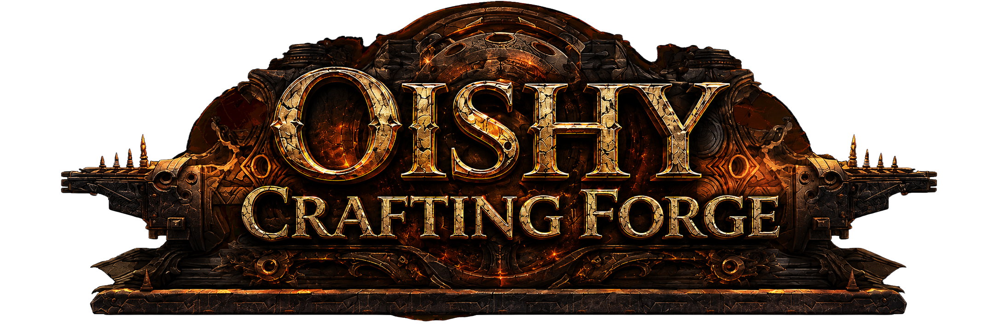

+Drag an item here
Cobalt Jewel
Item Level: 83
Place into an allocated Jewel Socket on the Passive Skill Tree. Right click to remove from the Socket.

Pick an item category to begin.
Jewel Crafting Emulator